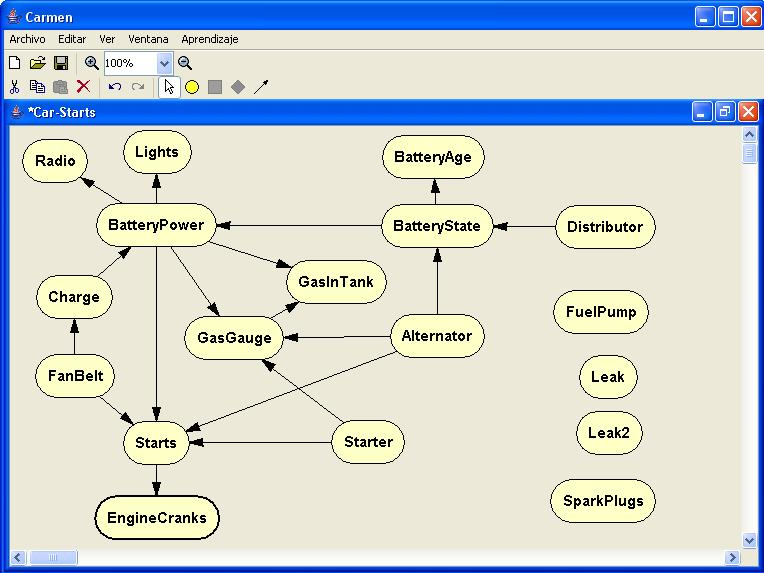

Una vez seleccionadas las variables que han de participar en el aprendizaje, sus opciones de preprocesamiento, el algoritmo a utilizar y la métrica, basta con pulsar el botón 'Aprender red' para que comience el proceso de aprendizaje. La duración de este proceso varía con el número de variables seleccionadas y el número de estados de cada variable, de ahí que, en muchos casos, resulta conveniente discretizar las variables para obtener mejores prestaciones tanto en términos de consumo de tiempo como en términos de consumo de memoria.
Una vez finalizado el aprendizaje, si no se ha producido ningún error, se nos muestra la pantalla principal de Carmen con la red aprendida.
En caso de que se haya optado por utilizar una red modelo, los nodos cuyas variables se llamen igual que las variables de la red modelo, se colocaran en la posición que tenían en dicha red, mientras que los nodos que no aparecen en la red modelo quedan apilados en la esquina superior izquierda (para colocarlos en la pantalla basta con pinchar sobre ellos y arrastrar).
En caso de que no se halla optado por utilizar una red modelo, todos los nodos apareceran sobrepuestos en la esquina superior izquierda de la pantalla, siendo necesario recolocarlos para visualizar correctamente la red obtenida como se ve en la imagen inferior.
